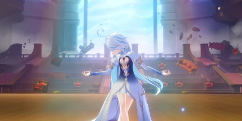

Fontaine · Quest Chronicles
Masquerade of the Guilty
This is the final act of Fontaine’s Archon Quest. It resolves the nation’s prophecy through Furina’s long performance, Focalors’ plan, and Neuvillette’s decision during the flood.

The final act of Fontaine’s prophecy
Masquerade of the Guilty is the final act of Fontaine’s Archon Quest. It reveals the long plan behind Furina’s public performance and brings the prophecy’s threatened flood to its conclusion.
The title points to the roles people played and the truths they kept hidden. The story asks readers to reconsider earlier scenes once they know what Focalors and Furina were each doing.
Focalors, Furina, and Neuvillette
Focalors’ plan depends on Furina maintaining the public role of Hydro Archon while Neuvillette serves as Fontaine’s Iudex. Their responsibilities are different, and the conclusion only makes sense when those roles are kept separate.
Focalors uses the trial system and her stored authority to change the outcome of the prophecy. Neuvillette’s restored authority as the Hydro Dragon Sovereign is central to what happens next.
The prophecy and Fontaine’s people
The prophecy threatens Fontaine’s people with a flood and a return to the Primordial Sea. The resolution preserves the people by changing the conditions behind the prophecy, rather than simply defeating a physical enemy.
This resolution affects the whole nation. The ending also leaves individual characters to understand what happened and build a life after the crisis. Furina’s later story is an important part of that aftermath.
What the act confirms
The quest confirms the broad structure of Focalors’ plan and the roles of the people who carried it out. It does not explain every older detail about the Primordial Sea or the full history of Hydro dragons.
For a complete reading, compare the Act V scenes with Furina’s and Neuvillette’s character stories and Fontaine’s world quests. Keep theories about unresolved divine history clearly labeled.
This is an original CoreGG reading guide, not an official HoYoverse article or a reproduction of the game text. Source links below identify the records used so you can check the original context.
Sources & references
Check these sources for the original game text and reference trail.